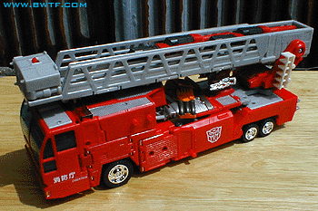
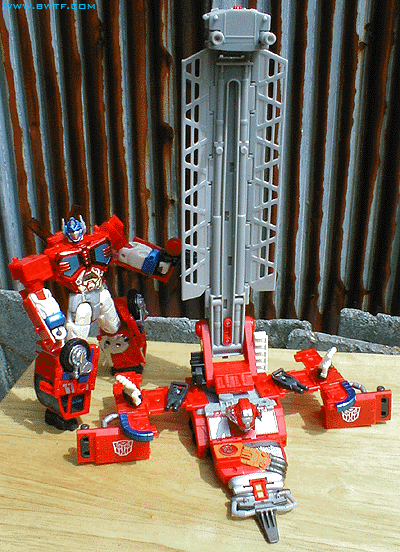
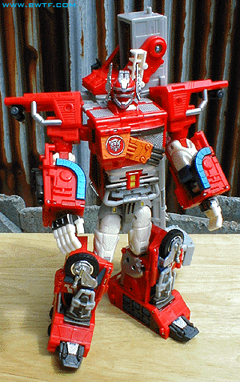

Allegiance
: Autobot
Size
: Super
Difficulty of Transformation
: Hard
Japanese Name
: (Super) Fire Convoy
Color Scheme
: Red, light gray, silver,
transparent light blue, dark gray, light orange, chrome silver, chrome
red, off-white, sparkly blue, and some transparent dark red, chrome gold,
light sparkly blue, and light black
Mold History
: Optimus Prime was
a completely new mold created for Car Robots (which subsequently became
Robots in Disguise).
Rating
: 9.4

Optimus Prime's vehicle
mode is a fire truck. This mode is very nice- the "doors", rubber wheels,
and everything are very well done. (The wheels still say "Fire Convoy"
on them, however- something Hasbro forgot to change!) My only major problem
with this mode is that Prime's "super" robot head and chest plate are pretty
visible on the backside in this form, which could have been handled better.
Also, although the mold detailing on the sides is alright, there should
have been a bit more paint detailing. At least the large Autobot symbol
partially makes up for it. There's also some Japanese lettering on the
left front part of the truck, with "Cybertron" under it. A pretty nice
touch, and adds to the Oriental origins of this Transformers series. The
transparent light blue windows are a nice touch, but the robot feet are
kind of visible on the inside, so making them either a darker transparent
color or just solid would have probably been a better choice. Another problem
with this vehicle mode, especially for people who play with their toys
a lot, is that the front part of the fire truck can disconnect from the
back part a bit easier than I'd like. There's really only two different
parts holding them together, you see, and it doesn't work that well if
you try picking the fire truck up at any one point. What really makes this
mode neat, however, are the action features. By pressing down on a small
red tab on the front of the ladder, two small "water guns" flip out of
the front! The ladder can also extend to twice its original length! Also,
by pressing a small red button on the back of the ladder, you can fire
ALL FOUR missiles inside it at once! Bombardment, baby! You have to push
back on the inner part of the ladder to lock the button into place first,
though, so make sure it's that way before you fire them all. The missiles
also have individual buttons, in case you just want to fire them individually.
By pressing the red button in between the two siren lights, you can activate
Optimus Prime's "electronic" feature. Red lights in his sirens will go
off one after the other, and Optimus will "say" one of five things:
- One siren blare.
- Several siren blares.
- "Optimus Prime, maximize!" (which really
doesn't make any sense, since he's an AUTOBOT)
- "Autobots, transform!" (That's better.)
- "Fire!" accompanied by a bunch of blast
sounds
As you can see, that's a pretty nice feature,
except for the ridiculous "Maximize!" part. What were the guys on when
they decided to record that!?! We haven't had American sounds gimmicks
with actual voices since, well... before I started reviewing toys, that's
for sure.

Optimus Prime's "regular"
robot mode is actually pretty easy to transform into for such a large toy.
His base mode can get rather confusing, as it's just an amalgamation of
parts, but we'll get to that later. Optimus Prime's regular robot mode
is amazing. He's one of the most posable and durable of all the transformers-
all his parts stay together very well, and he has two points of shoulder
articulation, as well as elbow, hand, head, head antennae (yes, his head
antennae can move!), waist, upper leg, ankle, and feet articulation. Hot
diggity! He's also very well balanced- his rather large lower feet make
him so. His two sirens rotate upward on his upper back so that he almost
looks like he has two "swords" stuck in a sheath on his back. Nice! Optimus
Prime's head and chest also retain some homage to the
original
toy
in their style, with "windows" on his chest, a face plate, and
those large side antennae. His chest is also made that preeetty transmetal
stuff, too- and it doesn't chip that easily, either. The wheels on his
knees are also add to the mode a bit. He also has a little hand gun for
this mode. A perfect- and I mean PERFECT- regular robot mode! (You also
can attach the parts that made up his "super" robot feet to his shoulders
in this mode, to create some sort of "missile" launchers- but it's impossible
to make the base mode without these parts.)
Optimus Prime's base
mode is pretty much just a combination of the fire truck parts that don't
make up his regular robot mode. Although the ladder part looks rather nice
with its guns at the end- as some sort of long range gun- the rest just
looks rather cruddy. There's no attempt to hide the "Super" robot mode
hands, head, or chest at all. However, the original Optimus Prime toy also
had a seperate base made from his vehicle mode, so, seeing as how this
is somewhat of a homage to the original toy, I can partially forgive this.
It still isn't really worth the confusing effort to put it together, however.

In his "super" robot
mode, Optimus Prime is definitely ready to fight! He's got extra armor
everywhere, and he's effin' big! Basically, to get Prime's "super" robot
mode, you attach extra armor pieces to his head & chest, hands, shoulders,
and feet. He has a big sash on his chest in this mode, and his antennae
can swing forward to become guns! Lift up the Autobot symbol on his chest
to discover some robotic detailing inside- a nice touch. His head &
chest armor piece is a bit harder to get on than I'd like, but it's no
big deal. Some people have reported that the clip which holds part of the
aforementioned armor plate on can cause the chest transmetal plastic to
chip after a while, but I haven't experienced this yet. His shoulder armor
parts also fall off a bit easily. Optimus Prime doesn't have quite as much
articulation in this mode as he does in his "regular" robot mode, because
of his large armor parts, but there's not that much a reduction in movement.
It's still a great mode! Optimus Prime's large fire truck ladder in the
back is the only real problem I have with it- it gets in the way quite
a bit, and there's not really any place you can put it to move it out of
the way. You can swing it over his shoulder like he does in the show to
have him carry a big honkin' cannon, but it tends to put him a bit off
balance when you do so, and requires a bit of working to get it positioned
just right. But besides those couple of downfalls, this mode is both great
looking and great to play with.
Optimus Prime's "regular"
robot mode becomes the main body with with to attach all of
Ultra
Magnus'
parts to form
Omega Prime
.
A great toy, especially
in his different robot modes. His base mode could use some work, but it's
not really that big of a deal. Highly recommended.
Review by Beastbot